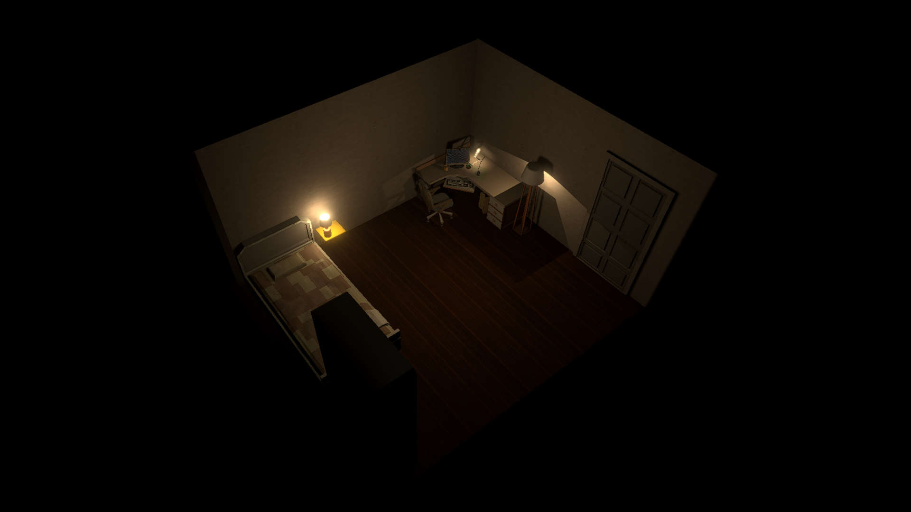

You Stayed
A psychological horror prototype about grief and guilt. You play a text adventure on an in-game terminal while a 3D room around it slowly takes over the game.

- Role
- Solo game and narrative design, and development
- Team
- Solo
- Timeline
- February 2025 to March 2025. Prototype, development stopped
- Tools
- Unity (C#)
The design problem
I wanted the horror to bleed into the game slowly. The player spends their time working through a case file on a terminal, using commands and exploring the scene. Only at the end do they see that this habit is what the protagonist is answering for. That only works if the player never feels accused and can't point to the moment the game turned on them. So the problem was how to take control away from the player, slowly enough, but impactfully enough, that they don't notice until the end and can see all the signs of it on a replay.
Key decisions
Simple commands that reward curiosity
The game only has a few simple commands that are shown in the HELP section, but the player can do so much more than that. They can explore pretty much anything they desire, and as a detective, this only makes the immersion stronger. The player, though, can finish the whole game without seeing much of it, so those who replay it will always find something new.
Taking options away instead of adding threats
There is no monster. The horror is in the loss of control. The trauma the protagonist went through creates this alternate reality in which they can cope with what happened, slowly being uncovered, and the player has to live through this uncovering. It isn't about amnesia, but what extreme trauma can do to someone's mind. The game quietly reinforces that throughout its entirety, until the loss of control is loud enough to stop being something the player just ignores.
The player doesn't notice until it's too late
The game runs a terminal and a 3D room at once, and they start unconnected. I let them affect each other in four stages: nothing in Act 1, the room reacting to text choices in Act 2, the text referencing real objects in the room in Act 3, and full collapse in Act 4. The rule is that every bleed event must be deniable on its own, as a coincidence, so the player can't be sure until the end. The room has to read as just what it is first and become the truth by the end. One manager listens to narrative events and drives the room, so I can pace the whole thing from a single place.